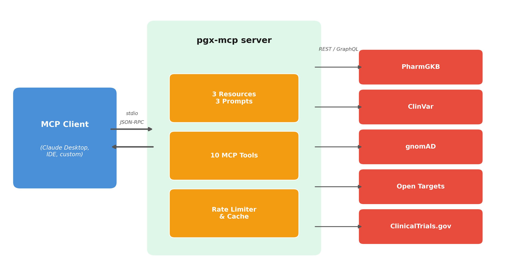

pgx-mcp is an open-source Python server implementing the
Model Context Protocol (MCP) that provides large language models (LLMs)
with real-time access to five pharmacogenomics databases: PharmGKB (Whirl-Carrillo et
al. 2012, 2021), ClinVar (Landrum et al.
2025), the Genome Aggregation Database (gnomAD) (Karczewski et al. 2020), Open Targets
Platform (Ochoa et al. 2023), and ClinicalTrials.gov
(Zarin et al.
2011). By exposing ten specialized tools, three reference
resources, and three prompt templates through a standardized protocol,
pgx-mcp enables LLM-assisted pharmacogenomic interpretation
grounded in authoritative, current data sources rather than static
training knowledge.
Pharmacogenomics (PGx) — the study of how genetic variation affects drug response — is increasingly central to precision medicine. Clinical implementation requires consulting multiple databases to interpret a patient’s genotype: ClinVar for variant pathogenicity, PharmGKB for drug-gene clinical annotations, Clinical Pharmacogenetics Implementation Consortium (CPIC) guidelines for dosing recommendations (Relling and Klein 2011; Relling et al. 2020), gnomAD for population allele frequencies, and clinical trial registries for relevant ongoing studies. Each database has a different interface, API protocol, and data format, creating a fragmented workflow that can take 30 minutes or more per clinical query (Farmaki et al. 2024).
Recent benchmarking studies demonstrate that standalone LLMs produce unreliable pharmacogenomic recommendations. The PGxQA benchmark, comprising over 110,000 PGx questions, found that even the best-performing model fell short of clinical standards, with particular weaknesses in allele function and diplotype-to-phenotype mapping (Keat et al. 2025). Similarly, evaluations of LLMs against CPIC guideline-based recommendations revealed systematic errors when models relied solely on training data (The Pharmacogenomics Journal 2025). These findings underscore that LLMs require grounding in authoritative databases to produce clinically reliable PGx interpretations — retrieval-augmented approaches using LLMs as co-pilots alongside structured data have been shown to improve accuracy 1.5-fold over human-only workflows in medication safety contexts.
pgx-mcp addresses this gap by serving as a middleware
integration layer between LLMs and PGx knowledge sources. Using the
Model Context Protocol (Anthropic 2024), an open standard
for connecting AI systems with external tools and data, the server
enables any MCP-compatible client (e.g., Claude Desktop, IDE
integrations) to query all five databases through natural language
conversation. This collapses the multi-site manual workflow into a
single interaction backed by live API calls.
Existing pharmacogenomics software falls into two categories. Genotyping tools — including Stargazer (Lee et al. 2019), PyPGx, Aldy (Numanagić et al. 2023), and StellarPGx — call star alleles from next-generation sequencing data. Annotation tools — notably PharmCAT (Sangkuhl et al. 2020; Tippenhauer et al. 2024) — translate genotypes into CPIC guideline-based recommendations from locally bundled data. Both categories operate on pre-existing sequencing results and do not provide real-time, interactive multi-database queries.
In the MCP ecosystem, BioMCP (GenomOncology, 2025) integrates PubMed, ClinicalTrials.gov, and MyVariant.info for oncology-focused literature and variant search. However, it does not cover PharmGKB clinical annotations, CPIC/DPWG dosing guidelines, gnomAD population frequencies, or Open Targets drug-target associations, and is not designed for pharmacogenomics workflows.
pgx-mcp occupies a distinct niche: it operates at the
data-access and interpretation layer rather than the genotyping layer,
integrates five complementary PGx databases through a single protocol,
and is purpose-built for pharmacogenomic clinical decision support
through LLM interaction. It complements rather than replaces genotyping
pipelines — a clinician using PharmCAT for star-allele calling can use
pgx-mcp to interactively explore the implications of those
results across multiple knowledge sources.
pgx-mcp is built on the MCP Python SDK (FastMCP) and
communicates via JSON-RPC over stdio transport. The architecture
comprises three layers:
API clients (clients/): Five async
HTTP/GraphQL clients inheriting from a BaseAPIClient that
provides per-API token-bucket rate limiting, in-memory TTL caching
(default 1 hour), and exponential backoff retry with 429/5xx handling.
Each client respects the rate limits of its target API (e.g., 1.5 req/s
for PharmGKB, 2.5 req/s for ClinVar).
MCP tools (tools/): Ten tool
functions containing domain logic and Markdown formatting. Tools never
interact with HTTP directly, receiving initialized clients via the
server’s lifespan context.
Server (server.py): Manages the
lifecycle of all API clients through an async context manager,
initializing connection pools at startup and closing them at
shutdown.
The server exposes nine database-specific tools and one composite
tool. Database-specific tools include
lookup_variant_clinvar and
search_gene_variants_clinvar for ClinVar queries;
get_drug_gene_interactions, get_drug_info, and
search_drug_targets for PharmGKB and Open Targets;
get_dosing_guideline for CPIC/DPWG guidelines;
get_variant_frequency for gnomAD population data; and
search_clinical_trials and get_trial_details
for ClinicalTrials.gov.
The composite pgx_consultation tool orchestrates queries
across all five databases for a given gene-diplotype pair, producing a
comprehensive clinical report. Each data-gathering step is independently
error-handled, ensuring partial results are returned even if one source
is unavailable. illustrates the data flow.

Three MCP resources provide static reference data: a list of all 19 CPIC pharmacogenes with associated drugs, parameterized gene references with database links, and a server capabilities description. Three prompt templates guide multi-step reasoning workflows for patient consultations, variant interpretation, and drug PGx reviews.
All settings use environment variables with sensible defaults; no
configuration is required for basic operation. An optional NCBI API key
triples the ClinVar rate limit. The package is installable via
pip install pgx-mcp and integrates with Claude Desktop
through a single JSON configuration entry.
pgx-mcp enables a new mode of pharmacogenomic data
exploration where researchers and clinicians interact with five
authoritative PGx databases through natural language. Given the
demonstrated limitations of standalone LLMs for PGx tasks (Keat et al. 2025; The Pharmacogenomics Journal
2025) and the documented challenges of integrating PGx clinical
decision support in practice (Farmaki et al.
2024), tools that ground LLM responses in real-time authoritative
data are needed. As the first pharmacogenomics-specific MCP server,
pgx-mcp establishes a foundation for LLM-assisted precision
medicine workflows and provides infrastructure for future research
comparing LLM-augmented versus manual PGx interpretation.
The initial implementation of pgx-mcp was developed with
assistance from Claude Code (Anthropic), an AI-powered software
engineering tool. All generated code was reviewed, tested, and validated
by the author. The LLM assisted with code generation, debugging, and API
integration; the architectural design, tool selection, and clinical
domain modeling were directed by the author. This paper was drafted with
AI assistance and reviewed and edited by the author.
The author thanks the teams behind PharmGKB, ClinVar, gnomAD, Open
Targets Platform, and ClinicalTrials.gov for maintaining open, publicly
accessible APIs that make tools like pgx-mcp possible. The
author also thanks the Anthropic MCP team for the open-source Model
Context Protocol specification and Python SDK.